1 Where Atoms Come From
Learning objectives
After reading this chapter you should be able to:
- Describe the structure of an atom in terms of protons, neutrons and electrons, and define atomic number, mass number and isotope.
- Explain how hydrogen and helium formed in the first minutes after the Big Bang, and how heavier elements, including carbon, nitrogen, oxygen and phosphorus, are produced in stars.
- Compare the abundance of the elements in the Universe with their abundance in RNA, and explain why phosphorus is the scarcest of the five elements RNA requires.
- Outline how material made in stars became part of the solar system, and state the age of the solar system and the time scale of the Earth’s formation.
1.1 Matter, elements and atoms
The question of this book
Every molecule of RNA in every living cell is built from atoms of only five elements: hydrogen (H), carbon (C), nitrogen (N), oxygen (O) and phosphorus (P) (Figure 1.1). This book follows those five elements from their origin to the point at which they are joined into a molecule that can direct the synthesis of copies of itself. The first step is to define precisely what an element and an atom are.
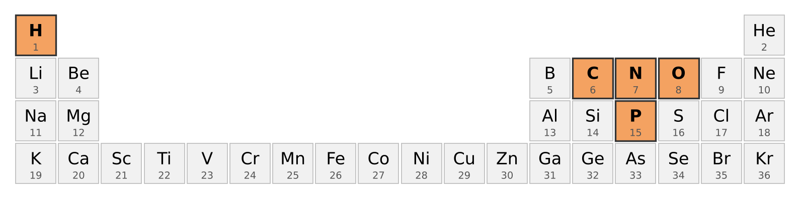
The atom and its three particles
An atom is the smallest unit of a chemical element. It consists of a small, dense, positively charged nucleus surrounded by a much larger region occupied by electrons (Figure 1.2).
The nucleus is made of two kinds of particle. A proton carries one positive elementary charge, +e, where e = 1.602 176 634 × 10−19 coulombs, a value that is exact by definition in the International System of Units (National Institute of Standards and Technology, n.d.). A neutron carries no charge and has almost the same mass as a proton: 1.6726 × 10−27 kg for the proton and 1.6749 × 10−27 kg for the neutron (National Institute of Standards and Technology, n.d.). Protons and neutrons are known collectively as nucleons. An electron carries one negative elementary charge, −e, and has a mass about 1/1836 that of a proton (National Institute of Standards and Technology, n.d.). Consequently more than 99.9 percent of the mass of an atom resides in its nucleus.
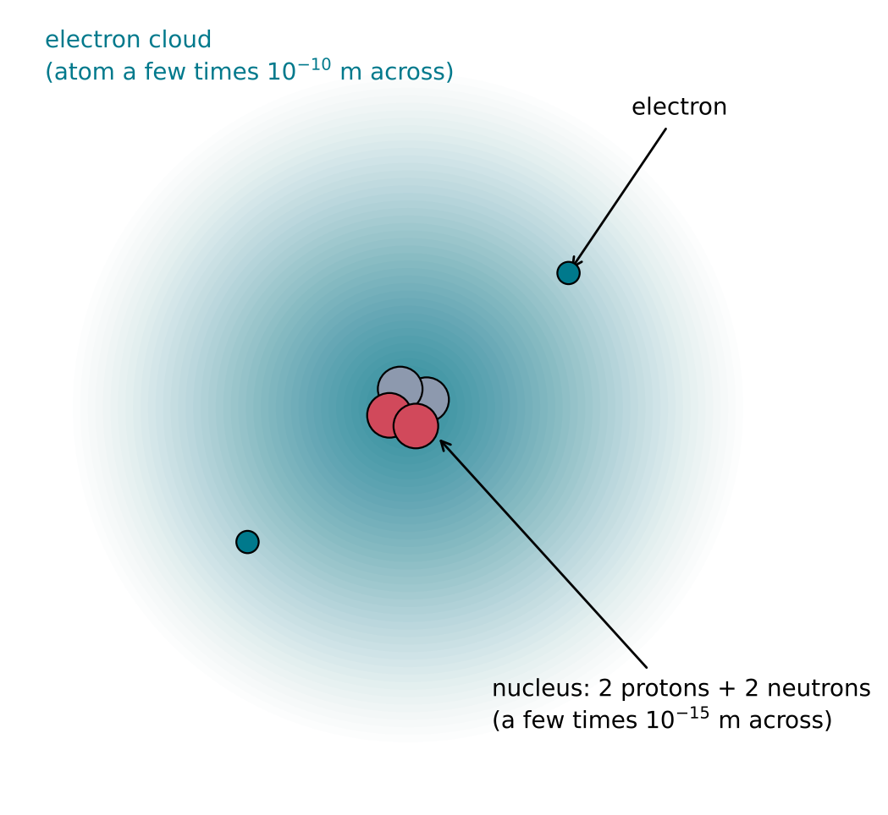
The size difference between the nucleus and the atom is extreme. An atom has a radius of 1 to 2 × 10−10 m, whereas a nucleus ranges from about 4 × 10−15 m across for carbon to about 15 × 10−15 m for lead (Encyclopaedia Britannica, n.d.). The atom is therefore tens of thousands of times wider than its nucleus. The electrons do not move in fixed orbits, as Figure 1.2 might suggest. Quantum mechanics describes each electron by a probability distribution, and the shaded region in the figure represents where an electron is likely to be found. Chapter 2 develops this description, because it is the arrangement of electrons that determines how atoms bond to one another.
An atom is electrically neutral when it contains equal numbers of protons and electrons. An atom that has gained or lost electrons carries a net charge and is called an ion. Ions will be important in later chapters: the phosphate group of RNA, for example, carries negative charge in water, and positively charged magnesium ions play a central role in how RNA folds and reacts.
Atomic number and the definition of an element
The number of protons in a nucleus is the atomic number, symbol Z. The atomic number alone determines which element an atom belongs to: every atom with Z = 1 is hydrogen, every atom with Z = 6 is carbon, and every atom with Z = 15 is phosphorus. An element is therefore a substance made of atoms that all share the same atomic number. At present 118 elements have been identified and named, the most recent being elements 113, 115, 117 and 118, whose names were approved in 2016 (International Union of Pure and Applied Chemistry, n.d.).
The periodic table (Figure 1.1) arranges the elements in order of increasing atomic number. Elements in the same column have similar arrangements of their outermost electrons and therefore similar chemical behaviour, a relationship explained in Chapter 2.
Mass number and isotopes
The total number of nucleons in a nucleus is the mass number, symbol A:
\[ A = Z + N \]
where Z is the number of protons and N is the number of neutrons. Atoms of the same element can contain different numbers of neutrons. Such variants are called isotopes. They have the same atomic number, and therefore almost identical chemistry, but different mass numbers.
An isotope is written with its mass number as a superscript before the element symbol. Hydrogen provides the simplest example (Figure 1.3). Ordinary hydrogen, 1H or protium, has a nucleus consisting of a single proton. Deuterium, 2H, has one proton and one neutron; in the international reference standard for ocean water it accounts for 0.0156 percent of hydrogen atoms (IUPAC Commission on Isotopic Abundances and Atomic Weights, n.d.c). Tritium, 3H, has one proton and two neutrons; it is radioactive, with a half-life of 12.3 years (IUPAC Commission on Isotopic Abundances and Atomic Weights, n.d.c), and is therefore present only in trace amounts.
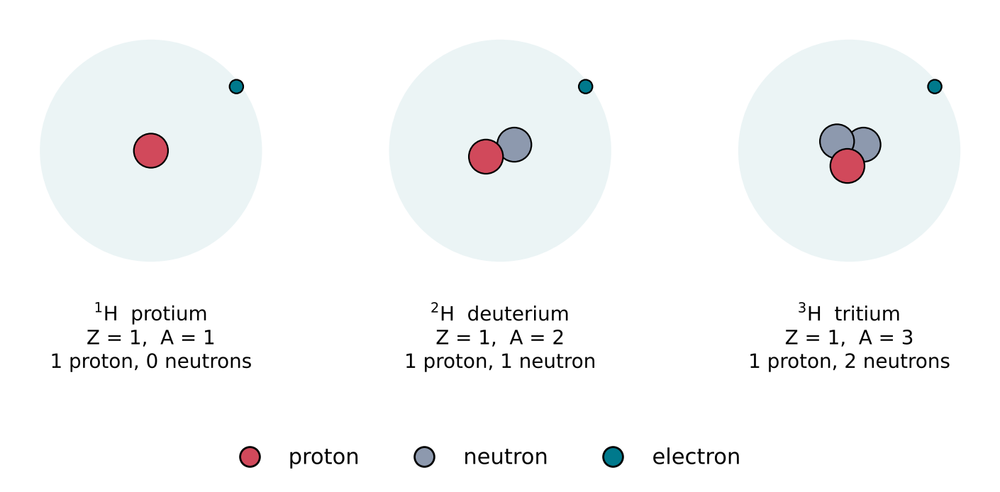
Carbon offers a second example that recurs throughout this book. Carbon-12 (six protons, six neutrons) makes up about 99 percent of natural carbon (98.84 to 99.04 percent, depending on the source), and carbon-13 (six protons, seven neutrons) about 1 percent (IUPAC Commission on Isotopic Abundances and Atomic Weights, n.d.a). Carbon-14, with eight neutrons, is radioactive, with a half-life of 5,730 years (IUPAC Commission on Isotopic Abundances and Atomic Weights, n.d.a). Because living organisms take up carbon-12 slightly more readily than carbon-13, the ratio of the two isotopes in ancient rocks is one of the lines of evidence used to search for the earliest traces of life (Section 3.3).
Stability of nuclei
Not every combination of protons and neutrons forms a stable nucleus. Protons repel one another electrically; they are held together, along with neutrons, by the strong nuclear force, which is far stronger than the electrical repulsion but acts only over distances comparable to the size of a nucleus. A nucleus with too many or too few neutrons relative to its protons is unstable and transforms, or decays, into a different nucleus, emitting radiation in the process. The time required for half of the nuclei in a sample to decay is the half-life. Radioactive decay with known half-lives provides the clocks by which the ages of the Earth and its oldest rocks are measured (Section 3.1).
Where the elements come from
The definitions above raise the question that occupies the rest of this chapter. If every element is defined by the number of protons in its nucleus, then making a new element requires changing that number, which requires a nuclear reaction. Ordinary chemistry, which rearranges electrons, cannot do this. The hydrogen in water, the carbon and nitrogen in a nucleobase and the phosphorus in a phosphate group were therefore all produced by nuclear processes, either in the first minutes of the Universe or later inside stars. Sections 1.2 to 1.5 describe those processes in turn.
1.2 The first three minutes
An expanding, cooling Universe
The Universe has been expanding since its beginning about 13.8 billion years ago (Planck Collaboration, Aghanim, et al. 2020). The evidence for this comes from two independent observations. First, light from distant galaxies is shifted to longer wavelengths in proportion to their distance, which shows that space between galaxies is stretching. Second, the sky is filled with a nearly uniform microwave radiation, the cosmic microwave background, which is the cooled remnant of radiation from a time when the Universe was hot and dense. The model that accounts for both observations, in which the Universe evolved from an extremely hot, dense initial state, is called the Big Bang model.
An expanding gas cools. Extrapolating backwards, the early Universe was hotter the earlier one looks. Temperature determines which particles can exist as separate entities. Above about 1010 K, collisions are so energetic that any nucleus formed is immediately broken apart again, and matter consists of free protons, neutrons, electrons, photons and neutrinos. The formation of the first nuclei therefore had to wait until the Universe had cooled sufficiently. This process is called Big Bang nucleosynthesis (Figure 1.4).
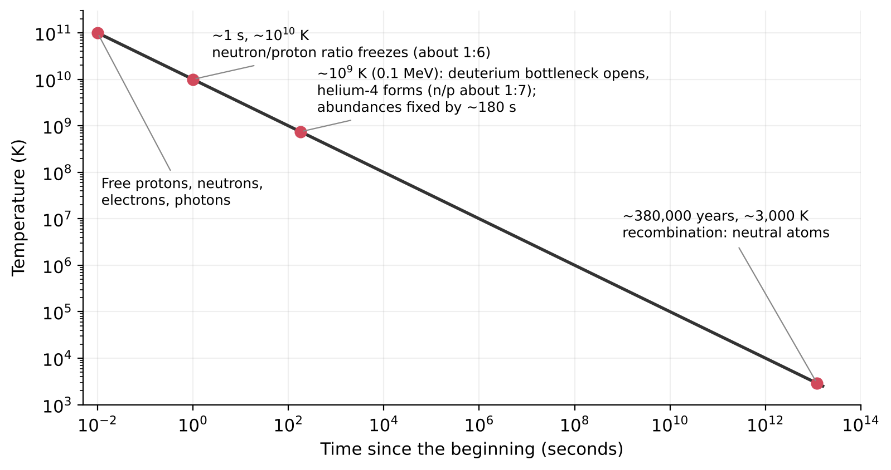
Fixing the ratio of neutrons to protons
The outcome of Big Bang nucleosynthesis is controlled by one number: the ratio of neutrons to protons at the moment nuclei begin to form. At temperatures above about 1010 K (a thermal energy of about 1 MeV), weak nuclear reactions involving neutrinos and electrons convert neutrons into protons and protons into neutrons fast enough to keep the two in balance. Because a neutron is slightly heavier than a proton (by 1.293 MeV, about 0.14 percent of the proton mass (Fields, Molaro, and Sarkar 2024)), the balance favours protons, and increasingly so as the temperature falls.
About one second after the beginning, the Universe had cooled to roughly 1010 K and these conversion reactions became too slow to keep up with the expansion. The neutron-to-proton ratio then stopped adjusting to temperature, or froze out, at approximately 1 neutron for every 6 protons (Fields, Molaro, and Sarkar 2024). After freeze-out, the only process that changed the ratio was the decay of free neutrons. A free neutron is unstable: it decays into a proton, an electron and an antineutrino, with a mean lifetime of 879.4 ± 0.6 seconds (Fields, Molaro, and Sarkar 2024). Neutrons were therefore steadily lost until they were locked inside nuclei, where they are stable.
The deuterium bottleneck
The first step in building any nucleus heavier than hydrogen is the fusion of a proton and a neutron into a deuterium nucleus (a deuteron):
\[ \mathrm{p} + \mathrm{n} \rightarrow {}^{2}\mathrm{H} + \gamma \]
where \(\gamma\) denotes a high-energy photon (a gamma ray) that carries away the energy released. The deuteron is only weakly bound, so in the early Universe it was destroyed by energetic photons as fast as it formed. Photons vastly outnumbered nucleons, by about 1.6 billion to one (Fields, Molaro, and Sarkar 2024), so even when the average photon energy fell below the deuteron binding energy, enough photons in the high-energy tail of the distribution remained to break deuterons apart. Nucleosynthesis was held up at this first step, a delay known as the deuterium bottleneck.
The bottleneck opened only when the temperature fell to about 109 K (a thermal energy of about 0.1 MeV), within the first few minutes (Fields, Molaro, and Sarkar 2024). By then neutron decay had reduced the ratio to about 1 neutron for every 7 protons (Fields, Molaro, and Sarkar 2024).
From deuterium to helium
Once deuterons survived, further fusion reactions followed rapidly. Deuterons combined with protons, neutrons and each other to form tritium (3H), helium-3 (3He) and finally helium-4 (4He). Helium-4, with two protons and two neutrons, is an exceptionally tightly bound nucleus. Almost every neutron that existed when the bottleneck opened therefore ended up in helium-4.
This allows a simple estimate of how much helium the Big Bang produced. Suppose there are n neutrons for every p protons. Each helium-4 nucleus contains 2 neutrons and 2 protons, so if all neutrons end up in helium-4, the mass of helium is the mass of 2n nucleons, out of a total of n + p nucleons. The helium mass fraction, symbol Y, is therefore
\[ Y = \frac{2n}{n + p} = \frac{2\,(n/p)}{1 + n/p} \]
where n/p is the neutron-to-proton ratio. With n/p = 1/7,
\[ Y = \frac{2 \times (1/7)}{1 + 1/7} = \frac{2}{8} = 0.25 \]
About one quarter of the mass of ordinary matter should therefore have emerged from the first few minutes as helium-4, and the remaining three quarters as hydrogen. Measurements of helium in the oldest stars and in gas clouds that have undergone little stellar processing give Y = 0.245 ± 0.003, close to this estimate (Fields, Molaro, and Sarkar 2024). This agreement is one of the principal observational supports of the Big Bang model.
Why nucleosynthesis stopped at lithium
Big Bang nucleosynthesis produced almost nothing heavier than helium. The reason lies in nuclear stability: there is no stable nucleus with mass number 5 or mass number 8. A helium-4 nucleus that captures a proton or a neutron forms a mass-5 nucleus that falls apart almost instantly, and two helium-4 nuclei that fuse form beryllium-8, which also falls apart almost instantly. Only small amounts of lithium-7 (and beryllium-7, which later decays to lithium-7) formed through less direct routes. At the same time, the expansion was lowering the temperature and density, and by about 180 seconds after the beginning the abundances of the light nuclei were essentially fixed (Fields, Molaro, and Sarkar 2024).
The products of Big Bang nucleosynthesis are summarised in Figure 1.5. Hydrogen and helium-4 dominate. Deuterium, helium-3 and lithium-7 are present in trace amounts. Carbon, nitrogen, oxygen and phosphorus are absent.
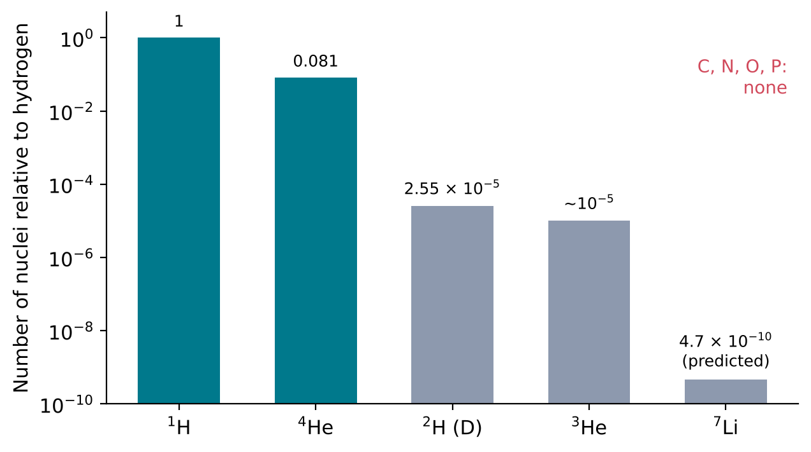
From nuclei to atoms
The nuclei formed in the first minutes were not yet atoms. The Universe was still hot enough to strip electrons from any nucleus, so matter remained an ionised gas, or plasma, of nuclei and free electrons. Only about 380,000 years later, when the temperature had fallen to about 3,000 K, could electrons bind permanently to nuclei to form neutral hydrogen and helium atoms (European Space Agency, n.d.). This event is called recombination. Once matter became neutral, photons could travel freely through space; the cosmic microwave background observed today is this released radiation, now cooled to 2.7255 K by the continued expansion (Fixsen 2009).
Consequence for this book
Of the five elements that make up RNA, the Big Bang supplied only one: hydrogen. Every atom of carbon, nitrogen, oxygen and phosphorus had to be made later, inside stars. The barrier that stopped Big Bang nucleosynthesis, the absence of stable nuclei of mass 5 and 8, is the same barrier that stars must overcome to make carbon. Section 1.3 describes how they do it.
1.3 Stars as element factories
Why fusion releases energy
The mass of a nucleus is always slightly less than the total mass of the free protons and neutrons that compose it. The difference, multiplied by the square of the speed of light, is the binding energy: the energy that would be required to separate the nucleus completely into its nucleons, and equally the energy released when the nucleus is assembled from them. The relation between mass and energy is Einstein’s
\[ E = mc^2 \]
where E is energy, m is mass and c is the speed of light in vacuum (299 792 458 m s−1). In nuclear physics, masses are usually expressed in atomic mass units (u), defined as one twelfth of the mass of a carbon-12 atom; one atomic mass unit is equivalent to 931.494 MeV of energy (National Institute of Standards and Technology, n.d.).
The binding energy of a nucleus with Z protons and N neutrons can be calculated from measured atomic masses:
\[ B = \left[ Z\,m(^{1}\mathrm{H}) + N\,m_{\mathrm{n}} - m(\text{atom}) \right] c^2 \]
where m(1H) is the mass of a hydrogen atom, mn is the mass of a neutron and m(atom) is the mass of the atom in question. Using the hydrogen atom rather than the bare proton keeps the electron masses balanced on both sides of the equation.
What matters for the release of energy is the binding energy per nucleon, B/A. A nuclear reaction releases energy when its products have a higher binding energy per nucleon than its reactants. Figure 1.6 shows B/A for a selection of nuclei, calculated with the equation above from atomic masses tabulated by the IUPAC Commission on Isotopic Abundances and Atomic Weights (IUPAC Commission on Isotopic Abundances and Atomic Weights, n.d.c, n.d.b, n.d.f, n.d.d, n.d.e, n.d.j) and the neutron mass from CODATA 2022 (National Institute of Standards and Technology, n.d.). The value rises steeply from deuterium (1.11 MeV) to helium-4 (7.07 MeV), continues to rise more slowly through carbon-12 (7.68 MeV) and oxygen-16 (7.98 MeV), reaches a maximum near iron-56 (8.790 MeV) and nickel-62 (8.795 MeV), and then declines slowly towards the heaviest nuclei, such as uranium-238 (7.57 MeV). Fusing light nuclei into heavier ones therefore releases energy, up to the region of iron and nickel. Beyond that region, fusion consumes energy instead.
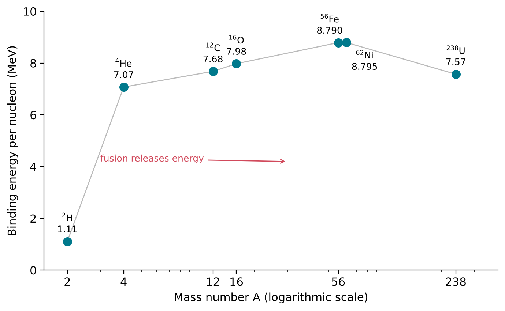
The steep rise from hydrogen to helium is the reason why the conversion of hydrogen into helium is the main energy source of stars, and the reason why helium-4, once formed, is so difficult to break apart.
Hydrogen burning: the proton-proton chain
A star is a self-gravitating ball of gas in which nuclear fusion in the core supplies the energy radiated from the surface. Gravity compresses and heats the core until fusion begins; the energy released then supports the star against further collapse. The fusion of hydrogen into helium is called hydrogen burning. The term is conventional: it refers to a nuclear process, not to chemical combustion.
In stars of the Sun’s mass, hydrogen burning proceeds mainly through the proton-proton chain (pp chain), which produces about 99 percent of the Sun’s energy (Adelberger et al. 2011). Its net result is
\[ 4\,\mathrm{p} \rightarrow {}^{4}\mathrm{He} + 2\mathrm{e}^{+} + 2\nu_{e} \]
where p is a proton, e+ is a positron (the antiparticle of the electron, with the same mass and opposite charge) and \(\nu_e\) is an electron neutrino, an electrically neutral particle of very small mass that interacts only weakly with matter (Adelberger et al. 2011). The most common sequence of steps (Figure 1.7) begins with the fusion of two protons into a deuteron, during which one proton is converted into a neutron. The deuteron then captures a further proton to form helium-3, and two helium-3 nuclei fuse to form helium-4, releasing two protons.
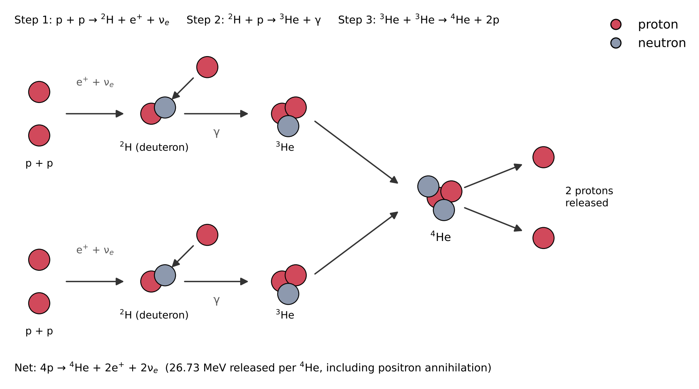
The energy released can be calculated from the atomic masses of hydrogen-1 (1.007 825 03 u) and helium-4 (4.002 603 25 u) (IUPAC Commission on Isotopic Abundances and Atomic Weights, n.d.c, n.d.b). Four hydrogen atoms have a mass of 4.031 300 13 u; one helium-4 atom has a mass 0.028 696 88 u smaller. Multiplying by 931.494 MeV per atomic mass unit gives an energy release of 26.73 MeV for each helium-4 nucleus formed, which includes the energy from the annihilation of the two positrons with electrons. A small part of this energy is carried away by the neutrinos, which escape from the star. The mass lost is 0.71 percent of the original mass of hydrogen.
This small fraction, multiplied over the mass of a star, is enough to power it for billions of years. The Sun radiates energy at a rate of 3.828 × 1026 W (International Astronomical Union 2015). Dividing by c2 shows that it converts about 4.26 × 109 kg of mass into energy every second, roughly four million tonnes. The temperature at the centre of the Sun is about 15.5 million K (Adelberger et al. 2011), and the Sun has been burning hydrogen in its core for about 4.6 billion years (Adelberger et al. 2011; NASA, n.d.).
Helium burning and the beryllium-8 problem
When the hydrogen in a star’s core is exhausted, fusion there stops and the core, now made mostly of helium, contracts under gravity and heats up. Helium nuclei carry two positive charges each, so they repel each other more strongly than protons do, and fusing them requires a higher temperature: near 108 K (José and Iliadis 2011). At such temperatures helium burning begins.
The obvious first step, the fusion of two helium-4 nuclei, leads to a dead end. The product, beryllium-8, is the unstable mass-8 nucleus already encountered in Section 1.2. Its ground state has an energy width of 5.57 eV (Tilley et al. 2004), which corresponds to a half-life of about 8 × 10−17 s: it falls apart into two helium-4 nuclei almost as soon as it forms. In a hot, dense stellar core, however, beryllium-8 is formed continuously, so a tiny equilibrium population is always present. If a third helium-4 nucleus strikes a beryllium-8 nucleus during its brief existence, carbon-12 can form. The overall process,
\[ 3\,{}^{4}\mathrm{He} \rightarrow {}^{12}\mathrm{C} + \gamma \]
is called the triple-alpha process, because a helium-4 nucleus is also called an alpha particle.
The Hoyle state
Even with a population of beryllium-8 present, the capture of a third helium-4 nucleus would be far too slow to explain the observed abundance of carbon unless the reaction were greatly enhanced. Such enhancement occurs when the combined energy of the colliding nuclei matches the energy of an excited state of the product nucleus, an arrangement of its nucleons with more energy than the lowest-energy arrangement, or ground state. Reactions at such a matching energy, called a resonance, proceed far faster than reactions at other energies.
In the early 1950s Fred Hoyle argued that, because carbon is abundant, carbon-12 must possess an excited state just above the combined energy of beryllium-8 and helium-4, and he predicted it at about 7.68 MeV (Freer and Fynbo 2014). In 1953 Dunbar, Pixley, Wenzel and Whaling observed a level at 7.68 ± 0.03 MeV in carbon-12, and in their report thanked Hoyle for pointing out its astrophysical significance (Dunbar et al. 1953). Its properties were confirmed in subsequent measurements (Freer and Fynbo 2014). The state is now known as the Hoyle state. It lies at 7.65 MeV above the ground state of carbon-12, 285 keV above the energy of beryllium-8 plus helium-4 (Figure 1.8) (Freer and Fynbo 2014).
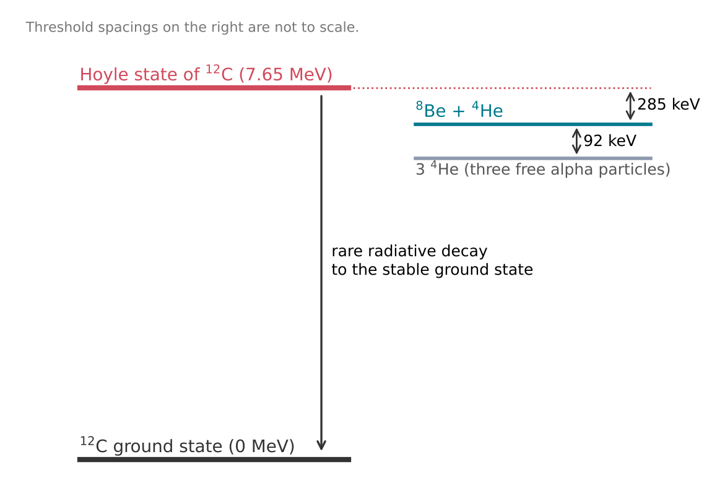
Most carbon-12 nuclei formed in the Hoyle state break up again into three helium-4 nuclei. A small fraction instead lose their excess energy by emitting radiation and settle into the stable ground state. That small fraction is the origin of essentially all the carbon in the Universe, including the carbon in every RNA molecule.
Hoyle’s prediction is a rare example in physics of a property of a nucleus being inferred from an astronomical observation, the abundance of carbon, before it was confirmed in the laboratory. Hoyle predicted a state near 7.68 MeV; Dunbar and colleagues, studying the reaction 14N(d,\(\alpha\))12C with a high-resolution spectrometer, observed a state at that energy (Dunbar et al. 1953; Freer and Fynbo 2014). Later work refined the energy to 7.653 ± 0.008 MeV and indicated a spin and parity of 0+ (Freer and Fynbo 2014).
From carbon to oxygen
Once carbon-12 is present, it can capture a further helium-4 nucleus:
\[ {}^{12}\mathrm{C} + {}^{4}\mathrm{He} \rightarrow {}^{16}\mathrm{O} + \gamma \]
This reaction converts part of the carbon into oxygen-16 (Silva Aguirre 2017). Unlike the triple-alpha process, it has no resonance that would make it fast enough to destroy most of the carbon as it is made (Freer and Fynbo 2014). Helium burning therefore leaves behind a core rich in both carbon and oxygen (José and Iliadis 2011).
Consequence for this book
Stars produce two of the five elements of RNA, carbon and oxygen, through helium burning, and they convert hydrogen into the helium needed to make them. Nitrogen and phosphorus require further processes, described in Sections 1.4 and 1.5.
1.4 Beyond carbon: nitrogen, massive stars and supernovae
The CNO cycle and the origin of nitrogen
Once a star contains carbon, nitrogen and oxygen, these nuclei open a second route for hydrogen burning, the CNO cycle. In its main branch, a carbon-12 nucleus captures four protons in succession, with two positron emissions along the way, and finally emits a helium-4 nucleus, regenerating carbon-12 (Johnson et al. 2022):
\[ {}^{12}\mathrm{C}(\mathrm{p},\gamma)\,{}^{13}\mathrm{N}(\beta^{+}\nu_e)\,{}^{13}\mathrm{C}(\mathrm{p},\gamma)\,{}^{14}\mathrm{N}(\mathrm{p},\gamma)\,{}^{15}\mathrm{O}(\beta^{+}\nu_e)\,{}^{15}\mathrm{N}(\mathrm{p},\alpha)\,{}^{12}\mathrm{C} \]
This compact notation is standard in nuclear astrophysics. In A(b,c)D, nucleus A captures particle b and emits particle c, becoming nucleus D. \(\beta^{+}\) denotes beta-plus decay, in which a proton inside a nucleus turns into a neutron and a positron and a neutrino are emitted. The cycle is shown in Figure 1.9.
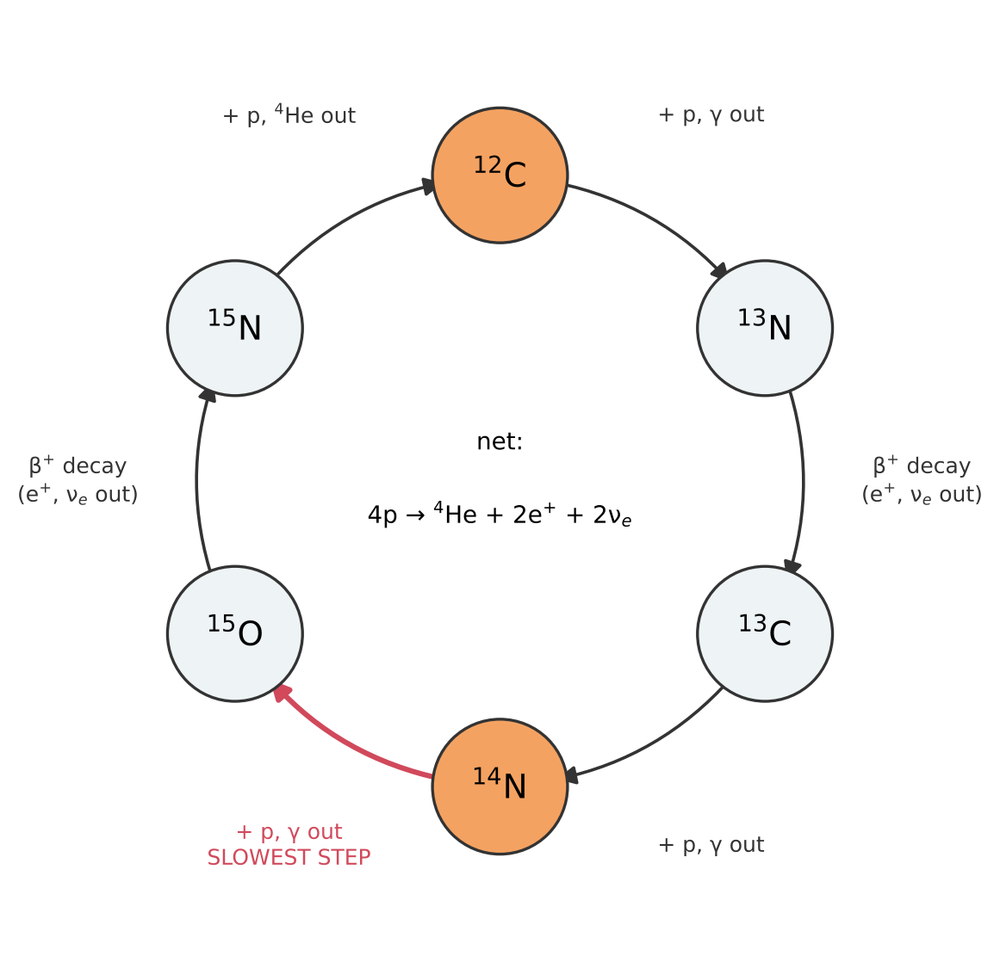
The carbon, nitrogen and oxygen nuclei act as catalysts: they are not consumed, and the net result is the same as that of the proton-proton chain, four protons converted into one helium-4 nucleus. The steps, however, proceed at very different rates. The slowest by far is the capture of a proton by nitrogen-14, 14N(p,\(\gamma\))15O. Nuclei therefore pile up at the stage just before this step, and the first-order effect of the cycle is to convert most of the carbon in a stellar core into nitrogen-14 (Johnson et al. 2022). This is the principal way in which stars make nitrogen.
The CNO cycle is very sensitive to temperature. In the Sun, with a central temperature of about 15.5 million K, it produces only about 1 percent of the energy (Adelberger et al. 2011). In stars with central temperatures above about 20 million K the CNO cycle dominates (Ray 2009), which corresponds to main-sequence stars with initial masses above about 1.3 times that of the Sun (Johnson et al. 2022). Nitrogen made in this way is later returned to interstellar space, both by massive stars when they explode and by lower-mass stars, which shed their outer layers late in their lives (Johnson et al. 2022).
Burning stages in massive stars
A star with more than about eight times the mass of the Sun (8 ± 1 solar masses, a value that depends to some extent on stellar models) does not stop at helium burning (Smartt 2009). Each time a fuel is exhausted in the core, the core contracts and heats until the ashes of the previous stage ignite. Carbon burns to neon and magnesium, neon to oxygen and magnesium, oxygen to silicon and sulfur, and finally silicon to iron. Table 1.1 gives typical central temperatures and durations for a star of 20 solar masses, computed with stellar evolution models (Heger et al. 2002).
| Fuel | Main products | Central temperature (109 K) | Duration |
|---|---|---|---|
| Hydrogen | Helium | 0.037 | 8.1 million years |
| Helium | Oxygen, carbon | 0.19 | 1.2 million years |
| Carbon | Neon, magnesium | 0.87 | 980 years |
| Neon | Oxygen, magnesium | 1.6 | 0.6 years |
| Oxygen | Silicon, sulfur | 2.0 | 1.3 years |
| Silicon | Iron | 3.3 | 0.031 years (about 11 days) |
Two features of the table stand out. Each stage requires a higher temperature than the last, because heavier nuclei carry more positive charge and repel each other more strongly. And each stage is shorter than the last, ending with a silicon-burning stage that lasts about eleven days. Because burning continues in shells around the core after it has stopped at the centre, a massive star near the end of its life has a layered structure, with the products of successive burning stages arranged in concentric shells (Figure 1.10).
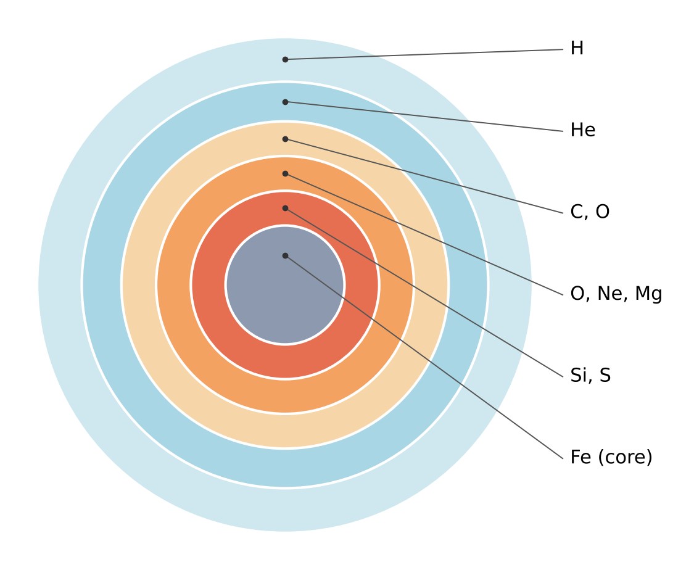
The end at iron: core collapse
The sequence stops at iron because of the binding-energy curve (Figure 1.6). Iron-56 and nickel-62 lie at its maximum, so fusing iron-group nuclei into heavier ones does not release energy. Once the core is made of iron, nuclear burning no longer provides the pressure that supports it against gravity (Smartt 2009). When the iron core grows beyond the Chandrasekhar mass, the largest mass that the pressure of its electrons can support, it collapses (Heger et al. 2002).
The collapse of an iron core of about 1.4 solar masses releases an enormous amount of gravitational energy (Smartt 2009). Most of it, around 3 × 1046 J (3 × 1053 erg), is carried away by neutrinos. A small fraction drives an explosion that ejects the outer layers of the star with a kinetic energy of typically about 1044 J (1051 erg); the light emitted is usually 1 to 10 percent of this kinetic energy (Smartt 2009). This event is a core-collapse supernova. The ejected material carries the products of all the burning stages, including carbon, oxygen and nitrogen, into interstellar space, where it mixes with the gas from which later generations of stars and planets form.
Consequence for this book
Three of the five elements of RNA are now accounted for: carbon and oxygen from helium burning, and nitrogen from the CNO cycle. Hydrogen dates from the first minutes of the Universe. The remaining element, phosphorus, is the subject of the next section.
1.5 Phosphorus: the scarce element
One stable isotope
Phosphorus has atomic number 15. Of its isotopes, only one is stable: phosphorus-31, with 15 protons and 16 neutrons. An element with a single stable isotope is called monoisotopic. Every phosphorus atom in a rock, in sea water or in an RNA molecule is therefore an atom of 31P, and the standard atomic weight of phosphorus, 30.973 761 998(5), is simply the atomic mass of that isotope (IUPAC Commission on Isotopic Abundances and Atomic Weights, n.d.g). Other isotopes, such as 32P and 33P, are radioactive; they are made in small amounts by cosmic rays and in nuclear reactors and do not persist (IUPAC Commission on Isotopic Abundances and Atomic Weights, n.d.g).
In RNA, phosphorus occurs in the phosphate groups that link one nucleotide to the next, one phosphorus atom per nucleotide (Chapters 5 and 6). An RNA molecule cannot be built without it.
Measuring abundances: the log epsilon scale
The abundance of an element in a star is measured from the strength of the absorption lines that its atoms produce in the star’s spectrum. Astronomers report the result on a logarithmic scale defined relative to hydrogen:
\[ \log \varepsilon_{\mathrm{X}} = \log_{10}\!\left(\frac{N_{\mathrm{X}}}{N_{\mathrm{H}}}\right) + 12 \]
Here \(N_{\mathrm{X}}\) is the number of atoms of element X per unit volume and \(N_{\mathrm{H}}\) is the number of hydrogen atoms in the same volume. The constant 12 is added so that hydrogen has log \(\varepsilon_{\mathrm{H}}\) = 12.00 by definition and all other elements have positive values (Asplund et al. 2009). A difference of 1 on this scale is a factor of 10 in number. The scale counts atoms, not mass.
Table 1.2 gives the present-day abundances in the photosphere of the Sun, the layer from which its visible light escapes, for the five elements of RNA and for helium, silicon, sulfur and iron. These values are used in the next section as the reference against which the composition of the Earth and of living matter is compared.
| Element | Z | log \(\varepsilon\) | Atoms per phosphorus atom |
|---|---|---|---|
| Hydrogen | 1 | 12.00 | 3.9 × 106 |
| Helium | 2 | 10.93 ± 0.01 | 3.3 × 105 |
| Oxygen | 8 | 8.69 ± 0.05 | 1900 |
| Carbon | 6 | 8.43 ± 0.05 | 1000 |
| Nitrogen | 7 | 7.83 ± 0.05 | 260 |
| Silicon | 14 | 7.51 ± 0.04 | 130 |
| Iron | 26 | 7.50 ± 0.04 | 120 |
| Sulfur | 16 | 7.12 ± 0.03 | 51 |
| Phosphorus | 15 | 5.41 ± 0.03 | 1 |
How scarce phosphorus is
The last column of Table 1.2 is obtained directly from the definition of log \(\varepsilon\). For carbon, for example,
\[ \frac{N_{\mathrm{C}}}{N_{\mathrm{P}}} = 10^{\,8.43 - 5.41} = 10^{3.02} \approx 1050 . \]
In the Sun there are therefore about 1000 carbon atoms, 1900 oxygen atoms, 260 nitrogen atoms and nearly four million hydrogen atoms for every atom of phosphorus (Figure 1.11). Of the five elements of RNA, phosphorus is by far the scarcest: about 260 times less common than nitrogen, the next scarcest.
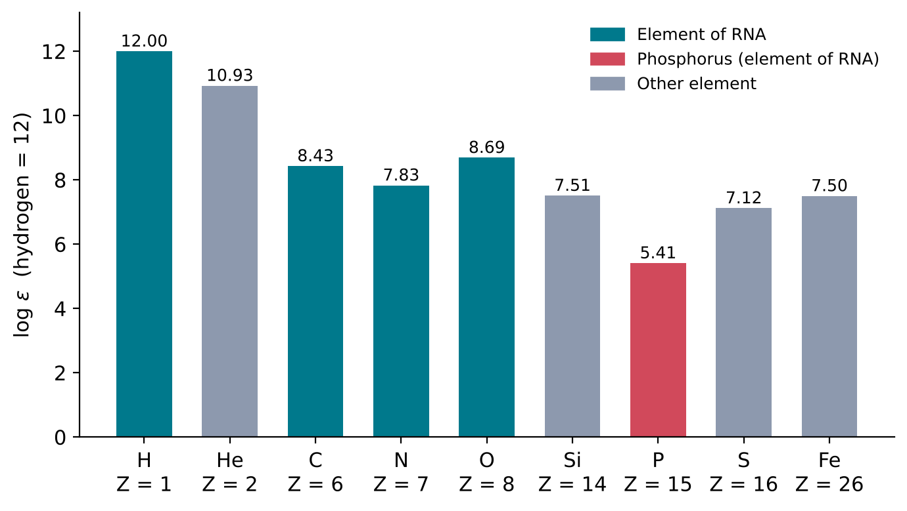
The comparison with its neighbours in the periodic table is equally striking. Silicon (Z = 14) is about 130 times and sulfur (Z = 16) about 50 times more abundant than phosphorus (Z = 15), which lies between them. One feature of nuclear structure distinguishes phosphorus from these neighbours. The dominant isotopes of silicon and sulfur are 28Si (about 92 percent of natural silicon) and 32S (about 95 percent of natural sulfur) (IUPAC Commission on Isotopic Abundances and Atomic Weights, n.d.h, n.d.i). Like 12C and 16O, they contain equal numbers of protons and neutrons, and their mass numbers are multiples of 4. A reaction between such a nucleus and a helium-4 nucleus conserves both the number of protons and the number of neutrons, so it can only produce another nucleus of the same kind. Phosphorus-31, with 15 protons and 16 neutrons, is not of this kind: no sequence of helium-4 captures starting from 12C or 16O can reach it. Its formation requires reactions in which single protons or neutrons are gained or lost. This structural difference is consistent with the low abundance of phosphorus, but a quantitative explanation requires detailed calculations of nuclear reaction networks, which are beyond the scope of this chapter.
Where phosphorus is made
Phosphorus is thought to be synthesised in massive stars and dispersed into interstellar space when these stars explode as supernovae (Koo et al. 2013). Until 2013, this conclusion rested on stellar models. It was then tested by direct observation of the debris of a supernova.
A supernova remnant is the expanding cloud of gas ejected by a supernova explosion, together with the interstellar gas it sweeps up. Cassiopeia A is a young supernova remnant. In 2013, Koo, Lee, Moon, Yoon and Raymond reported near-infrared spectroscopic observations of Cassiopeia A, from which they determined the amounts of phosphorus and iron in the material ejected by the supernova. They found that the ratio of phosphorus to iron-56, the main product of the final burning stage, was up to 100 times the average ratio in the Milky Way (Koo et al. 2013). This confirmed that phosphorus is produced in supernovae. The measured range of ratios agreed with predictions from supernova nucleosynthesis models, but not with a scenario in which the inner layers of the star are completely mixed during the explosion (Koo et al. 2013).
Consequence for this book
All five elements of RNA have now been traced to their sources: hydrogen to the first minutes of the Universe, carbon and oxygen to helium burning, nitrogen to the CNO cycle, and phosphorus to massive stars and their supernovae. Phosphorus is made in the smallest amount, about one atom for every thousand carbon atoms in the Sun. Its scarcity, and the chemistry of the minerals in which it is locked on a planet, will return as a central problem in Chapter 4.
1.6 Cosmic abundances and the elements of life
Three compositions
Section 1.5 described the composition of the Sun. This section compares it with two other compositions: the rocks at the surface of the Earth and living cells. The comparison shows which elements a planet makes easily available, and which elements living matter concentrates.
Two different measures of composition are used, and they should not be confused. A mass fraction is the mass of an element divided by the total mass of the sample. An atom ratio is the number of atoms of one element divided by the number of atoms of another. To convert one into the other, each mass fraction is divided by the relative atomic mass of the element, the average mass of its atoms in atomic mass units (Section 1.3), as listed in the periodic table of the IUPAC (International Union of Pure and Applied Chemistry, n.d.). For an element X,
\[ n_{\mathrm{X}} = \frac{w_{\mathrm{X}}}{A_{r}(\mathrm{X})} \]
where \(w_{\mathrm{X}}\) is the mass fraction of X, \(A_{r}(\mathrm{X})\) its relative atomic mass, and \(n_{\mathrm{X}}\) is proportional to the number of atoms of X in the sample. Because the atom ratio is independent of the units used, this section compares compositions by the number of atoms of each element per atom of phosphorus, as in Table 1.2.
The Earth’s upper crust
The continental crust is the outer layer of rock that forms the continents. Its upper part is the most accessible region of the solid Earth, and its composition can be estimated by averaging chemical analyses of rocks sampled over large areas of the surface (Rudnick and Gao 2003). Geochemists conventionally report the major elements as oxides, because in rock-forming minerals these elements are combined with oxygen. Table 1.3 gives the recommended composition of the upper continental crust (Rudnick and Gao 2003).
| Oxide | Mass percent | Element | Mass percent of element | Atoms per phosphorus atom |
|---|---|---|---|---|
| SiO2 | 66.6 | Si | 31.1 | 520 |
| Al2O3 | 15.4 | Al | 8.2 | 140 |
| FeO (total Fe) | 5.04 | Fe | 3.9 | 33 |
| CaO | 3.59 | Ca | 2.6 | 30 |
| Na2O | 3.27 | Na | 2.4 | 50 |
| K2O | 2.80 | K | 2.3 | 28 |
| MgO | 2.48 | Mg | 1.5 | 29 |
| TiO2 | 0.64 | Ti | 0.38 | 4 |
| MnO | 0.10 | Mn | 0.08 | 0.7 |
| P2O5 | 0.15 | P | 0.065 | 1 |
| (oxygen in all oxides) | O | 47.5 | 1400 |
As an example of the calculation, P2O5 has a molar mass of 2 × 30.974 + 5 × 15.999 = 141.94 g mol−1, of which phosphorus contributes 61.95 g mol−1. A mass fraction of 0.15 percent P2O5 therefore contains 0.15 × 61.95 / 141.94 = 0.065 percent phosphorus.
Three features of Table 1.3 matter for this book. First, the upper crust is about half oxygen by mass, and silicon and oxygen together account for about four-fifths of it; rock is chiefly a framework of silicon and oxygen. Second, phosphorus is a minor element of the crust, at about 0.065 percent by mass, but it is present in every analysis. Third, carbon and nitrogen are absent from the list of major elements altogether. Nitrogen is a trace element, at 83 parts per million by mass in the upper crust (Rudnick and Gao 2003). Converted to atoms, this is about 0.3 nitrogen atoms for every phosphorus atom. In the Sun there are about 260 nitrogen atoms per phosphorus atom (Table 1.2).
The ratio of nitrogen to phosphorus is therefore lower in the crust than in the Sun by a factor of nearly 1000. Relative to phosphorus, most of the nitrogen of the material from which the solar system formed is missing from the Earth’s crust. Where it went, and how much nitrogen and carbon the early Earth retained, are questions for Section 1.7 and Chapter 3.
Living matter
The composition of a cell depends on the organism and on its growth conditions, so only representative values can be given. For the bacterium Escherichia coli, a standard laboratory organism, the dry mass is about 47 percent carbon (Heldal, Norland, and Tumyr 1985), 20 percent oxygen, 14 percent nitrogen, 8 percent hydrogen and 3 percent phosphorus (Neidhardt, Ingraham, and Schaechter, n.d.). (Dry mass is the mass remaining after all water has been removed.) Converted to atoms, these values give about 40 carbon atoms, 10 nitrogen atoms, 13 oxygen atoms and 80 hydrogen atoms for each phosphorus atom.
A second, widely used reference is the composition of marine phytoplankton, the microscopic photosynthetic organisms of the surface ocean. Biologists use an atom ratio of carbon to nitrogen to phosphorus of C:N:P = 106:16:1, based on an analysis of the average elemental composition of marine organisms; it is known as the Redfield ratio, after A. C. Redfield (Geider and La Roche 2002). The composition of marine particulate matter can deviate significantly from this ratio (Geider and La Roche 2002), but it remains a useful reference value.
Comparing the three
Figure 1.12 compares the number of carbon and nitrogen atoms per phosphorus atom in the Sun, the upper crust and living matter.
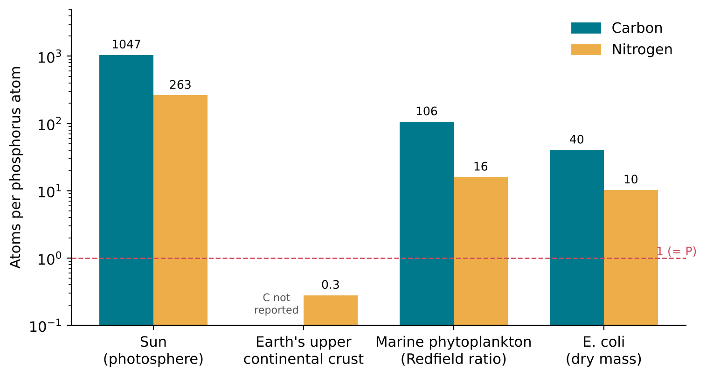
The figure shows two contrasts. Compared with the crust, living matter is enormously enriched in nitrogen, and in carbon, which is not even a major element of rock. Compared with the Sun, living matter is enriched in phosphorus: there are about 1000 carbon atoms per phosphorus atom in the Sun but only about 100 in phytoplankton and 40 in E. coli. Relative to carbon, living cells therefore contain roughly 10 to 25 times more phosphorus than the Sun.
Consequence for this book
The elements of RNA are not distributed as living matter requires. Carbon and nitrogen are abundant in the Universe but scarce in rock. Phosphorus is present in rock but scarce in the Universe, and in rock it is bound in minerals; how it can be brought into solution is taken up in Chapter 4. Any chemical route to RNA must therefore have drawn carbon and nitrogen from the atmosphere, the oceans or material delivered from space, and phosphorus from minerals. Where these supplies came from is the subject of Section 1.7 and Chapter 3.
1.7 From stellar ejecta to the forming Earth
Recycling between stars and gas
The elements made in stars are not lost when the stars die. Supernovae (Section 1.4) and the winds of stars return newly made nuclei to the gas between the stars, where they mix with gas that has not yet been processed. Stars that form later can therefore contain elements made by earlier stars. The Sun is an example: its photosphere contains carbon, nitrogen, oxygen and phosphorus (Table 1.2), none of which was made in the Big Bang (Section 1.2).
Stars form in molecular clouds: cold, dense clouds of interstellar gas in which hydrogen is present mainly as H2 molecules, together with dust grains. The Sun, like most stars, is assumed to have been born in such a cloud, within a cluster of stars; from the size of the solar system and from the radioactive isotopes discussed below, it has been estimated that this birth cluster contained at least 2000 stars (Pfalzner et al. 2015).
The age of the solar system
The oldest solids known to have formed in the solar system are found in chondrites, meteorites that consist of unprocessed early solar-system material (Pfalzner et al. 2015). Chondrites are made of three kinds of component cemented by a fine-grained matrix: calcium-aluminium-rich inclusions (CAIs), which are rare; chondrules, which are abundant, rounded objects rich in magnesium and silicon; and grains of iron-nickel metal (Pfalzner et al. 2015).
CAIs have been dated by the uranium-lead method, which uses the radioactive decay of uranium isotopes to lead isotopes (the method is explained in Section 3.1), to 4.567 to 4.568 billion years (Pfalzner et al. 2015). This is taken as the age of the solar system, and later events are dated as times after CAI formation. Chondrules formed up to about 4 million years later (Pfalzner et al. 2015).
The protoplanetary disc
A cloud core that collapses under its own gravity does not fall straight onto the forming star. Because the core rotates, much of its material settles into a flattened, rotating disc of gas and dust around the young star, a protoplanetary disc, from which planets form. Such discs are observed around young stars today. Their masses are typically between 0.2 and 20 percent of the mass of the central star (Pfalzner et al. 2015). Their lifetimes can be estimated from the fraction of young stars that still show the infrared emission of a disc: this fraction falls exponentially with an e-folding time of about 3 million years (Pfalzner et al. 2015). Most stars therefore lose their discs within a few million years, although longer lifetimes, of 5 to 10 million years, have also been argued (Pfalzner et al. 2015).
The temperature of a disc falls with distance from the star, and this determines which substances can exist as solids. The snow line (or ice line) is the distance from the star beyond which ice grains can form (Pfalzner et al. 2015). For water, the corresponding temperature is about 150 K; for carbon monoxide, about 20 K (Pfalzner et al. 2015). Inside the water snow line, only rock-forming and metallic materials, such as the oxides and silicates of Table 1.3 and iron-nickel metal, are solid. Water, carbon monoxide and other volatile substances remain gases there.
Radioactive clues to the birth environment
Chondrites also contain the decay products of radioactive isotopes that no longer exist in the solar system. These short-lived radionuclides are radioactive isotopes with half-lives of less than 200 million years that were present in the early solar system (Pfalzner et al. 2015). Their presence shows that the material of the solar system was enriched in freshly made nuclei shortly before the solar system formed.
Analyses of the isotopes in meteorites show that they contain the decay products of aluminium-26 and iron-60, which have half-lives of 0.72 million and 2.6 million years respectively (Pfalzner et al. 2015). Neither isotope survives today, so they must have been incorporated into solids within a few half-lives of their production. Iron-60 is too rich in neutrons to be produced by irradiation, and it is absent from the winds of massive stars; its only possible source in the early solar system is at least one supernova (Pfalzner et al. 2015). Aluminium-26 cannot come from the same single supernova, because supernovae produce far more iron-60 than aluminium-26; its most likely origin is the wind of a single massive star nearby (Pfalzner et al. 2015). The isotopes of meteorites therefore record that material from massive stars, the same stars that make carbon, oxygen and phosphorus (Section 1.4, Section 1.5), was being added to the solar system’s raw material close to the time of its formation.
The decay of aluminium-26 also released heat. Because its half-life is short, this heat source was confined to the first 5 million years of solar-system history (Pfalzner et al. 2015).
Building the Earth
Within the disc, dust grains stick together and grow into larger bodies, which collide and merge to form planets. The process took different lengths of time for different bodies. Some meteorites come from asteroids that melted and separated internally into a metallic core and a rocky mantle, a process called differentiation. The parent bodies of the magmatic iron meteorites, one group of iron meteorites, differentiated within 1 to 2 million years of CAI formation, and those of most other differentiated meteorites within 3 to 5 million years (Pfalzner et al. 2015). Mars probably formed within 2 to 10 million years (Pfalzner et al. 2015). The Earth grew more slowly: measurements of the hafnium-tungsten system in terrestrial rocks and in chondrites show that its growth lasted at least 38 million years, and probably as long as 120 million years, after the formation of the solar system (Pfalzner et al. 2015). The giant impact that formed the Moon is an important event for dating the late stages of the Earth’s growth (Pfalzner et al. 2015).
There is growing evidence that much of the inventory of volatile elements in the inner solar system was added late, during the last stages of planetary growth (Pfalzner et al. 2015). Volatile substances, including water and compounds of carbon and nitrogen, are the raw materials of the chemistry described in the rest of this book; how and when the Earth acquired them is discussed in Chapter 3. Figure 1.13 summarises the time scales.
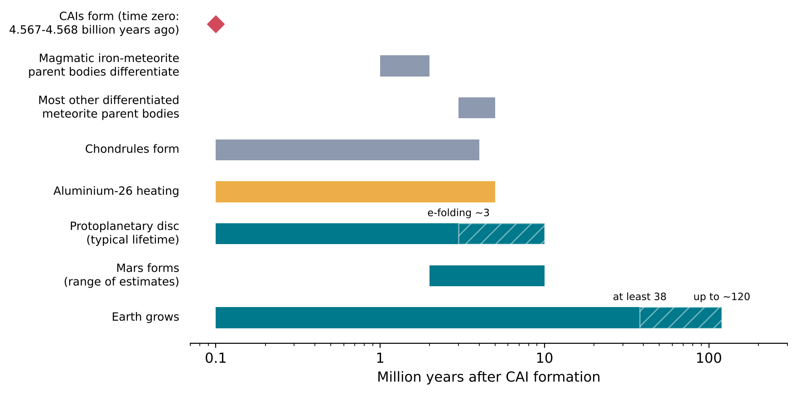
Consequence for this book
The five elements of RNA were made in the Big Bang and in stars, were dispersed by stellar winds and supernovae, mixed into a molecular cloud, and became part of the solid and gaseous material of the protoplanetary disc from which the Earth formed over several tens of millions of years. The Earth’s crust that resulted is rich in oxygen, silicon and metals but poor in carbon and nitrogen, and it holds its phosphorus in minerals (Section 1.6). Chapter 2 turns from nuclei to the chemical bonds that join atoms into molecules; Chapter 3 returns to the young Earth and the materials it offered for chemistry.
Summary
- An atom consists of a nucleus of protons and neutrons, surrounded by electrons. The nucleus holds almost all the mass but occupies a tiny fraction of the volume.
- The atomic number Z (number of protons) defines the element. The mass number A is the number of protons plus neutrons.
- Isotopes are atoms of the same element with different numbers of neutrons. They behave almost identically in chemistry but can differ in stability.
- RNA is built from only five elements: H, C, N, O and P. Each was produced by nuclear reactions, not by chemistry.
- The early Universe was too hot for nuclei to survive. Nuclei formed only after it cooled, in the first few minutes.
- The neutron-to-proton ratio (about 1 to 7 when nucleosynthesis began) fixed the helium mass fraction at about 0.25.
- Big Bang nucleosynthesis stopped at lithium because no stable nuclei exist with mass number 5 or 8. It produced hydrogen but none of C, N, O or P.
- Fusion of light nuclei releases energy because binding energy per nucleon rises from hydrogen up to the region of iron and nickel.
- Stars like the Sun convert hydrogen into helium through the proton-proton chain, releasing 26.7 MeV per helium-4 nucleus formed.
- In helium burning near 108 K, three helium-4 nuclei form carbon-12 through unstable beryllium-8 and the Hoyle state at 7.65 MeV; further helium capture turns part of the carbon into oxygen-16.
- In the CNO cycle, carbon, nitrogen and oxygen catalyse hydrogen burning; its slowest step converts most of the carbon in a stellar core into nitrogen-14, the main stellar source of nitrogen.
- Stars of more than about 8 solar masses burn successively heavier fuels up to iron, then their iron cores collapse and the stars explode as core-collapse supernovae, ejecting newly made elements into space.
- Phosphorus has a single stable isotope, 31P. It is made in massive stars and released by supernovae, as confirmed by observations of the supernova remnant Cassiopeia A.
- On the log \(\varepsilon\) scale, abundances are counted in atoms relative to 1012 hydrogen atoms. In the Sun there are about 1000 carbon atoms for every phosphorus atom; phosphorus is the scarcest of the five elements of RNA.
- The Earth’s upper crust is mostly oxygen and silicon. Phosphorus is a minor element of rock, carbon is not a major element at all, and there are fewer nitrogen atoms than phosphorus atoms.
- Living matter is rich in carbon and nitrogen compared with rock, and rich in phosphorus compared with the Sun: about 106 carbon atoms per phosphorus atom in marine phytoplankton (the Redfield ratio), against about 1000 in the Sun.
- The solar system formed from a molecular cloud enriched by earlier stars. Its oldest solids, CAIs in chondritic meteorites, are 4.567 to 4.568 billion years old.
- Extinct aluminium-26 and iron-60 in meteorites show that material from massive stars, including at least one supernova, was added shortly before the solar system formed.
- Planets formed in a protoplanetary disc that lasted a few million years. The Earth grew over at least 38 and probably up to about 120 million years.
Exercises
- A nucleus contains 7 protons and 8 neutrons. State its atomic number, mass number and element, and write its isotope symbol.
- Explain why 12C and 14C behave almost identically in chemical reactions but differently in a radiation detector.
- If the nucleus of an atom were enlarged to the size of a marble (1 cm across), estimate the diameter of the whole atom.
- Use the equation for Y to calculate the helium mass fraction if the neutron-to-proton ratio had been 1/5 when the deuterium bottleneck opened. Would a longer bottleneck produce more or less helium? Explain.
- Explain why the Big Bang produced almost no carbon, even though carbon-12 is a very stable nucleus.
- Using the atomic masses given in Section 1.3, calculate the fraction of mass converted into energy when four hydrogen atoms become one helium-4 atom.
- The Sun loses about 4.26 × 109 kg of mass per second through hydrogen burning. Assuming this rate has been constant, estimate the total mass the Sun has converted into energy over 4.6 billion years. (One year is about 3.16 × 107 s.)
- Explain why the existence of the Hoyle state was predicted from astronomical observations before it was found in the laboratory.
- Write out the main branch of the CNO cycle as six separate reactions, and show that its net effect is 4p \(\rightarrow\) 4He + 2e+ + 2\(\nu_e\).
- Using Table 1.1, calculate the ratio of the durations of hydrogen burning and silicon burning in a 20-solar-mass star.
- Explain, with reference to Figure 1.6, why a star cannot obtain energy by fusing iron.
- Using Table 1.2, calculate how many oxygen atoms and how many nitrogen atoms there are in the Sun for every phosphorus atom, and check your answers against the last column of the table.
- Show that a nucleus with equal numbers of protons and neutrons that captures a helium-4 nucleus again has equal numbers of protons and neutrons. Use this result to explain why phosphorus-31 cannot be made from carbon-12 by helium-4 captures alone.
- Explain why the standard atomic weight of phosphorus is known far more precisely than that of sulfur.
- Using the oxide composition in Table 1.3, calculate the mass percent of silicon in the upper crust. (Relative atomic masses: Si 28.085, O 15.999.)
- A sample of dry biomass contains 50 percent carbon and 3 percent phosphorus by mass. Calculate the number of carbon atoms per phosphorus atom, and compare it with the Redfield ratio and with the Sun.
- Explain why comparisons of composition in this chapter are made with atom ratios rather than with mass fractions.
- Aluminium-26 has a half-life of 0.72 million years. What fraction of the aluminium-26 present when CAIs formed remained after 5 million years? Use this to explain why aluminium-26 heating was confined to the earliest solar system.
- Explain why the presence of iron-60 decay products in meteorites is taken as evidence that at least one supernova contributed material to the early solar system.
- Using Figure 1.13, compare the lifetime of a typical protoplanetary disc with the time the Earth took to form. What does this imply about the amount of gas available during the late stages of the Earth’s growth?